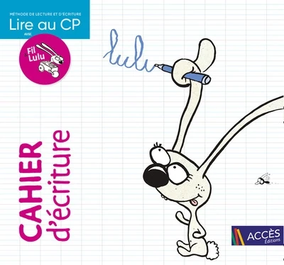
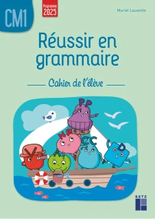
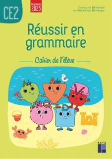
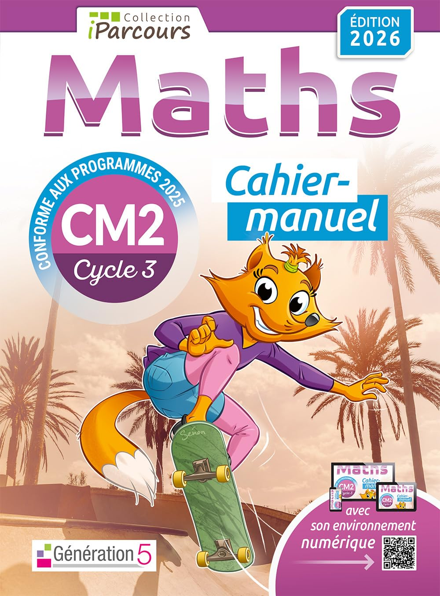
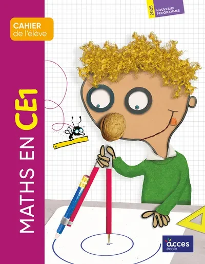
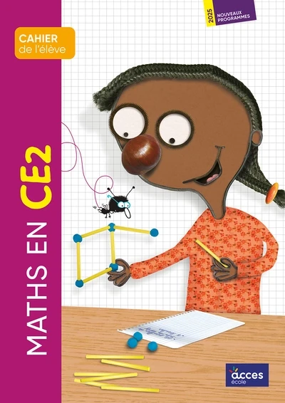
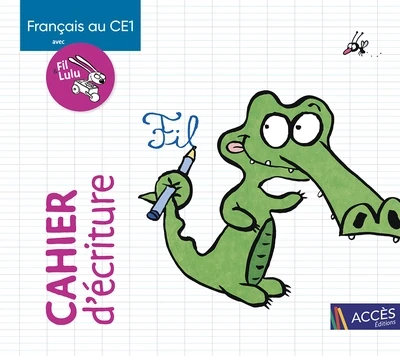
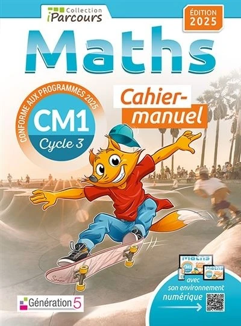
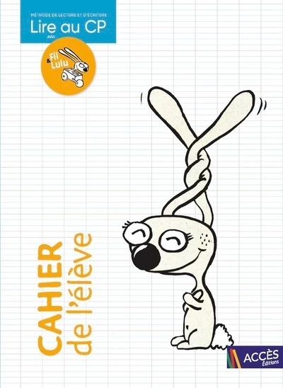
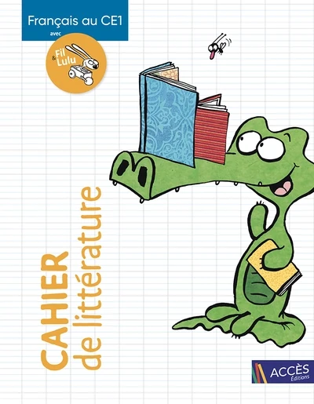

Chaque rentrée en classe multiniveaux, la même question revient : comment gérer plusieurs niveaux en même temps sans avoir l'impression de courir partout dès 8h30 ?
Pendant l'année 2025-2026, j'ai testé, ajusté et parfois changé plusieurs fois d'organisation avant de trouver une combinaison de méthodes qui me convenait vraiment.
Avec plusieurs niveaux dans une même classe — et notamment des CP qui demandent forcément beaucoup de présence — le choix des supports est loin d'être anodin. J'avais besoin de méthodes suffisamment structurées pour me faire gagner du temps, tout en me laissant la possibilité d'adapter les séances aux besoins de mes élèves.
Parce qu'en multiniveaux, soyons clairs : si une méthode peut m'éviter de fabriquer trois fiches différentes un dimanche soir, elle part déjà avec un avantage.
Grammaire : Réussir en grammaire — Retz
Pour la grammaire, du CE2 au CM2, je me suis appuyée sur la collection Réussir en grammaire des Éditions Retz.
Ce que j'aimais surtout, c'était la structure très régulière des séances : découverte, manipulation, mise en commun, leçon, exercices. Et c'est justement ce côté répétitif — dans le bon sens du terme, pour une fois — qui m'a beaucoup aidée en multiniveaux.

Réussir en grammaire CE2
J'aimais beaucoup le passage par la manipulation avant de poser la règle : on cherche d'abord, on met les mots dessus ensuite.
Voir sur Amazon
Réussir en grammaire CM1
Une organisation suffisamment proche du CE2 et du CM2 pour créer quelques passerelles sans demander la même chose à tout le monde.
Voir sur Amazon
Réussir en grammaire CM2
Même logique de fonctionnement avec des attentes de CM2. Quand on jongle déjà entre plusieurs groupes, une trame connue fait du bien.
Voir sur AmazonMaths CM : iParcours Maths — Génération 5
Pour mes CM1 et CM2, j'utilisais iParcours Maths. Ce que j'appréciais surtout, c'était la quantité d'exercices et leur organisation très lisible.
Après la découverte avec moi, les élèves pouvaient poursuivre leur entraînement assez facilement en autonomie. Et en multiniveaux, un groupe qui sait exactement quoi faire pendant qu'on est avec les autres, c'est presque du luxe.

iParcours Maths CM1
Beaucoup d'exercices dans lesquels je pouvais piocher selon les besoins, sans obliger tous les élèves à faire exactement la même chose.
Voir sur Amazon
iParcours Maths CM2
Le même fonctionnement pour les CM2 : simple à prendre en main et pratique pour installer de vrais temps d'entraînement autonome.
Voir sur AmazonMaths CP, CE1 et CE2 — Accès Éditions
Pour les plus jeunes, je m'appuyais sur Maths au CP, Maths au CE1 et Maths au CE2 chez Accès Éditions.
J'aimais leur côté très structuré et la place donnée à la manipulation. Avec les CP notamment, j'avais suffisamment de choses à gérer sans me demander à 22h la veille dans quel ordre j'allais construire toute ma progression de maths.

Maths au CP
Une vraie trame pour avancer progressivement, manipuler et construire les notions sans repartir d'une page blanche chaque semaine.
Voir sur Amazon
Maths au CE1
Une progression cadrée qui permettait de savoir où j'allais, même quand plusieurs autres niveaux attendaient leur tour.
Voir sur Amazon
Maths au CE2
Même logique : une base solide et suffisamment claire pour ensuite adapter les exercices ou le rythme aux élèves.
Voir sur AmazonDictées : Dictées et histoire des arts — Autour du monde
Pour les dictées, j'ai fait au plus simple : mes CE2, CM1 et CM2 travaillaient tous avec le même ouvrage Cycle 3, y compris mes CE2.
Même œuvre, même univers culturel, même préparation générale… puis je différenciais les attentes selon les niveaux. Et pour une fois en multiniveaux : un seul support et une seule œuvre à présenter à trois niveaux, autant dire que je n'allais pas me priver.

Autour du monde — Cycle 3
C'est l'ouvrage principal que j'utilisais pour tout le groupe, y compris avec mes CE2.
Voir sur Amazon
Cahier de l'élève
Le cahier associé à la méthode, pratique si vous préférez avoir directement un support individuel pour les élèves.
Voir sur AmazonLecture CP : Lire au CP avec Fil et Lulu — Accès Éditions
Ce qui m'a vraiment convaincue avec Fil et Lulu, c'est son côté 100% déchiffrable. Je ne voulais pas que mes CP regardent l'image, les deux premières lettres du mot et tentent leur chance en espérant que ça passe : je voulais qu'ils lisent. Vraiment.
Et je n'utilisais pas uniquement le manuel : j'avais choisi le manuel + le cahier de l'élève + le cahier d'écriture. Tout suivait la même progression, ce qui était franchement pratique en multiniveaux.

Le manuel de lecture
Le cœur de la méthode : une progression très cadrée et des textes que les élèves ont réellement les moyens de déchiffrer.
Voir sur Amazon
Le cahier de l'élève
Après la séance avec moi, les élèves pouvaient poursuivre sur des exercices directement liés à ce que nous venions de travailler.
Voir sur Amazon
Le cahier d'écriture
L'écriture suit la progression de lecture : une programmation supplémentaire de moins à faire vivre dans ma tête.
Voir sur AmazonFrançais CE1 : Fil et Lulu — Accès Éditions
Pour le CE1, j'ai poursuivi avec Français au CE1 avec Fil et Lulu. J'aimais la continuité avec le CP : les élèves retrouvaient des repères familiers, avec des attentes qui évoluaient évidemment avec leur niveau.
Et là encore, je travaillais avec plusieurs supports. Parce qu'avec plusieurs niveaux, chaque nouveau fonctionnement signifie une consigne à expliquer, réexpliquer… puis réexpliquer à celui qui n'écoutait toujours pas la deuxième fois.

Le manuel de l'élève
Le support principal pour poursuivre le travail en français avec un fonctionnement déjà familier pour les élèves.
Voir sur Amazon
Le cahier de littérature
Un support complémentaire autour des textes, de la compréhension et du travail écrit, directement relié à la méthode.
Voir sur Amazon
Le cahier d'écriture
Je gardais également le cahier d'écriture pour conserver un ensemble cohérent plutôt que d'empiler les progressions parallèles.
Voir sur AmazonCe que je retiens après une année en multiniveaux
Avec le recul, je ne pense pas qu'il existe une méthode parfaite pour une classe multiniveaux. Ce qui m'a réellement aidée, c'est plutôt de choisir des supports avec une progression très claire, une structure régulière et suffisamment d'autonomie pour pouvoir passer d'un groupe à l'autre.
Mon objectif n'était pas que tout le monde travaille exactement la même notion au même moment — mission impossible, épisode 47 — mais de créer des points de rencontre entre les niveaux puis de différencier les attentes.